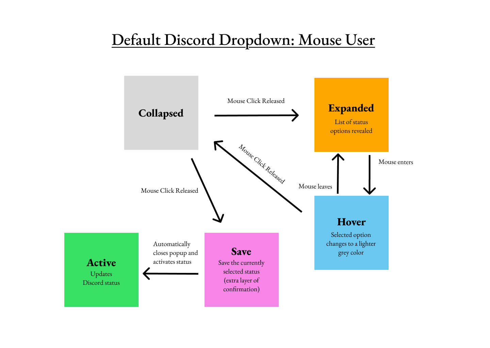
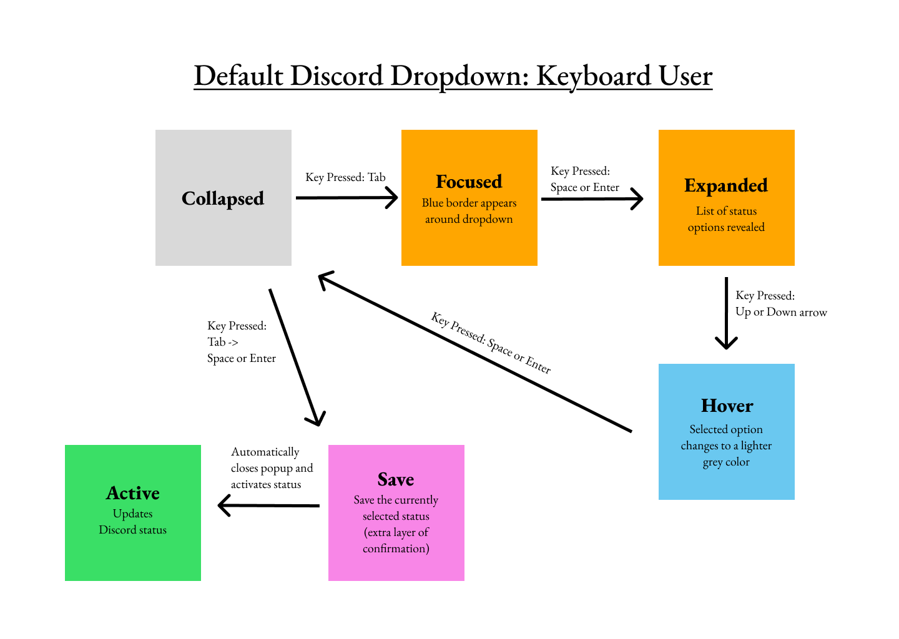
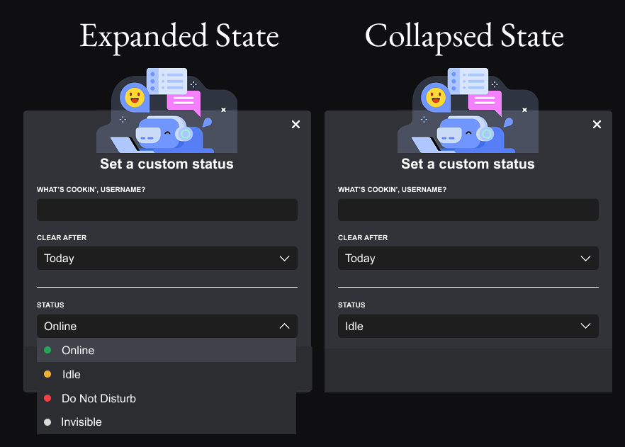
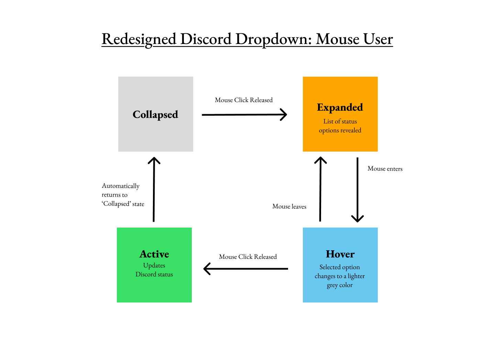
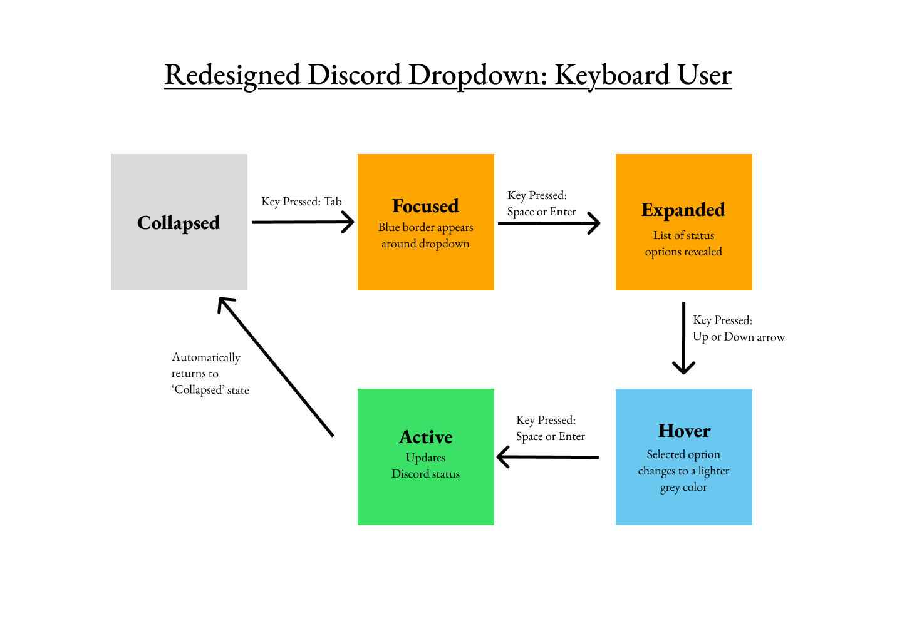

Dropdown Menu - Design Case Study
Posted on February 23, 2025
Overview
Dropdowns are everywhere. Whether you're selecting a drink at the order kiosk, hovering over the nav bar on nytimes.com , or scrolling through a very long Terms of Services, these little menus are a staple in web and app design. However, as simple as it seems, designing the perfect dropdown can be tricky.
In this case study, I'll explore how different design choices affect a dropdown's usability, accessibility, and user experience. I'll compare how dropdown menus are used in three of my favorite applications — Courses @ Brown, Steam, and Discord.
Before we jump in, here's a dropdown for you to play with:
Research
First, let's take a look at how dropdown menus work in different applications.
I will be using the following input methods:
- Mouse / Trackpad
- Keyboard
- Mobile / Touchscreen
Courses @ Brown
Dropdown menus in C@B are used to filter for courses by class year and department.

Notes
- Long list of options make it difficult to choose/tab through options at the bottom of the dropdown
- Option has a blue background in its hovered state
- Option is selected after mouse click release
- Dropdown text signals the currently selected state
- Dropdown selection immediately takes effect
- Great screenreader compatibility - detailed instructions like 'You are currently on a menu item. To choose this menu item, press Control-Option-Space. To exit, press Escape.'
Steam
Steam is a digital storefront for buying and playing video games. It employs a dropdown menu for game selection.


Notes
- Contains a search function that allows quickly searching for a game when the list is too long
- Game has a light blue highlight in its hovered state
- Game is selected after mouse click release
- Dropdown can be collapsed by clicking the `minus` sign next to `All`
- Dropdown selection immediately takes effect
- Focus order is hard to understand -- difficult to begin tabbing through the games list as a keyboard-only user
- Impossible to tab into search bar as a keyboard-only user
- Poor screenreader compatibility
Discord
Discord is a voice, video, and chat app used by people to hang out with their friends and communities. Users can update their status on Discord through a dropdown menu.
Notes
- Having only 4 status types make it easy to select/tab through quickly
- Inefficient - must tab through 5 layers to reach the status update component
- Unfriendly to error - any mistake in tabbing through the components requires retabbing through them again
- Dropdown text signals the currently selected state
- Status has a lighter gray background in its hovered state
- Status is selected after mouse click release
- Must press `Save` for the status to take effect
- Great screenreader compatibility - clear instructions like 'You are currently on a selectable' and 'Online, not selected'
Input Comparison
I organized my findings about input methods in the table below:
| Courses @ Brown | Discord | Steam | |
|---|---|---|---|
| Mouse or Trackpad | 🟡 Options are too small relative to the viewport height, making them difficult to select. |
✅ Easy to navigate. |
✅ Easy to navigate. |
| Keyboard | 🟡 Inefficient to tab through due to amount of options. |
🟡 Unclear whether `space` or `enter` confirmed selection; inefficient & unfriendly to error |
❌ Very difficult to tab into the games dropdown. |
| Mobile or Touchscreen | ✅ Easy to navigate. |
✅ Easy to navigate. |
N/A |
Output Comparison
Here are my findings about outputs:
| Courses @ Brown | Discord | Steam | |
|---|---|---|---|
| Visual Cues for State Changes | ✅ Expanded state when selecting an option; Collapsed state after selection, changes dropdown text. |
✅ Expanded state when selecting an option; Collapsed state after selection, changes dropdown text and status icon. |
✅ Light blue highlight on the selected game's dropdown text, with the game displayed on the right. |
| Logical Focus Order | ✅ Top-down focus order. |
✅ Top-down focus order. |
❌ Difficult to navigate, some components are excluded from the focus order. |
| Screenreader Compatibility | ✅ Clear about which dropdown option is being considered; provides instructions for how to select each option. |
✅ Clear about which dropdown option is being considered. |
❌ Only message from the screenreader is 'You are currently on a window'. |
Focused Study: Discord 'Update Status' Dropdown
Next, let's choose one of these applications to focus on. I'll be choosing Discord and mapping out how a user may interact with its dropdown menu via mouse and keyboard:
 Redesigning the Dropdown
From inspecting the state models, we'll notice there's a lot of states -- from expanding the menu, hovering over the desired status, saving the status, etc. As an improvement, maybe we can think of a way to reduce the number of states and improve the user experience?
Well, what about taking out the 'Save' button after selecting a status? Without the 'Save' button, the status would automatically update as soon as it's selected in the dropdown. That would certainly improve the efficiency of this interaction!
See my design below:
  Tradeoffs
However, with every redesign, there are trade-offs to consider. In this case, the redesign prioritizes efficiency, memorability, and accessibility at the cost of the interface’s learnability. While auto-saving removes friction, it may not be immediately intuitive for all users. Here’s a breakdown of the key trade-offs:
- Learnablity:
- Less intuitive for users who have not used auto-saving interfaces
- Some users may not immediately realize their status updates automatically, leading to confusion.
- Memorability:
- Once users learn that changes apply instantly, they are likely to remember this behavior for future updates
- Consistent with modern design patterns, reinforcing memorability through familiarity.
- Efficiency:
- Removes an unnecessary step, reducing time and effort to update the status.
- Eliminates frustration from forgetting to click "Save" and losing updates.
- Users who frequently change their mind might prefer a "Save" button to finalize changes when they’re ready rather than triggering multiple unnecessary updates.
- Accessibility:
- Reducing clicks can make the process easier for users with motor impairments.
- Users relying on assistive technology (e.g., screen readers) may need clear feedback that changes have been saved.
Design Philosophy
Designer Kat Holmes once said, "When I think about inclusive design ... it doesn't mean we're designing one thing for all people, it means we are designing a diversity of ways for people to participate in a place with a sense of belonging."
This mindset shaped my redesign of Discord’s status dropdown. From my observations of dropdowns in Steam and Courses@Brown, I found that triggering immediate state updates improved usability, efficiency, and accessibility. By removing the need for a "Save" button, my redesign streamlines status selection, reduces unnecessary steps, and makes the process more intuitive. This change not only enhances efficiency but also addresses accessibility concerns related to inefficiency and error handling.
The change I implemented addresses a mismatch in our world by reducing unnecessary interactions that can be particularly difficult for users with motor impairments. By simplifying the selection process, I created a more inclusive design that accommodates users who may struggle with precise clicking or repetitive motions.
Conclusion
In this case study, I discovered that mouse and touch users are often prioritized in UI design since they represent the majority of users. This can disadvantage keyboard and screen reader users, making navigation inefficient or inaccessible.
For example, Steam’s lack of keyboard accessibility can severely hinder users who rely on keyboard navigation, making game selection a frustrating experience. On the other hand, Courses @ Brown’s dropdown effectively communicates with screen readers, benefiting users with visual impairments by providing detailed selection instructions.
So, when we go out there and design user interfaces, let's pay attention to all input methods. :)